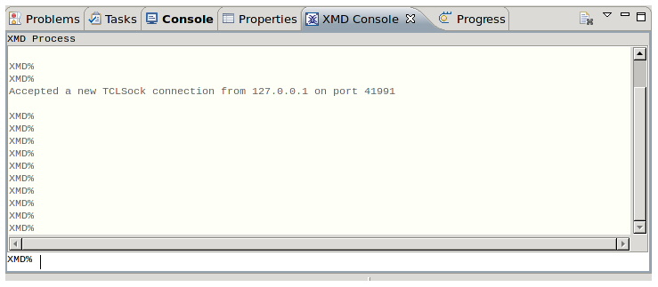

You can issue XMD commands or see the debug messages in the XMD console view. The XMD console view automatically opens when you switch to the Debug perspective.

To open the XMD Console view, do the following:
In the view, you can issue the XMD commands in the XMD% box.
For XMD Commands, refer to the Xilinx Microprocessor Debugger (XMD) chapter in the Embedded System Tools Reference Manual (UG111).